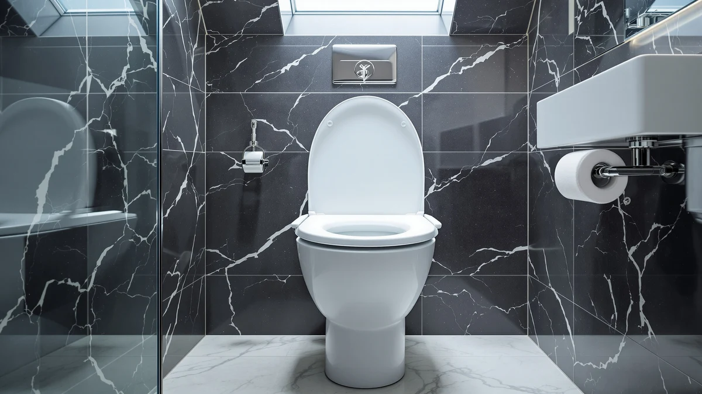

Best Toilet Seat Riser (2026)
Prices and picks verified as of September 2026. Independent, reader-supported reviews.


Quick Answer
After comparing height gain, weight capacity, and verified owner feedback across seven products, the Raised Toilet Seat Riser Adjustable is the best toilet seat riser for most bathrooms. It fits elongated and round bowls without tools, and its 4.5 star rating across 662 reviews holds up better than similarly priced alternatives. If you only need a couple of inches of lift, the foam-padded Essential Medical Supply option costs less and takes up less space.
Our pick: Raised Toilet Seat Riser Adjustable for $54.98 Check Price on Amazon
Bottom line: our top pick is the Raised Toilet Seat Riser Adjustable with Handles at $54.98. The best budget option is the Essential Medical Supply Foam Padded Toilet Seat Cushion at $22.95.
Things to Know Before You Buy
- Not every seat in this guide adds height. The Raised Toilet Seat Riser Adjustable and the Essential Medical Supply foam model are true risers. The Mayfair, KOHLER, and Bath Royale picks are standard replacement seats included for readers who decide a full riser is not necessary.
- Bowl shape matters more than brand. Elongated and round toilets are not interchangeable. Check your existing seat's shape before ordering a fixed-size replacement.
- Weight capacity varies by design. Clamp-on risers with a rigid frame generally hold more weight than thin foam pads, so match the product to the user's needs, not only the price.
- Installation time ranges from minutes to longer. Universal risers with clamps go on without tools in a few minutes. Bolt-down replacement seats take a bit longer because you remove the old hinges first.
- A slow-close hinge is a comfort upgrade, not a height upgrade. If your goal is easier sit-to-stand, look at the dedicated risers first, then decide if a softer-closing seat is worth adding on top.
Finding the best toilet seat riser comes down to one question most buying guides skip: do you need the seating surface raised, or do you want a more comfortable seat? Recovering from hip or knee surgery, managing arthritis, or supporting an aging parent usually calls for real height gain, while a cracked hinge or a worn-out seat calls for a straightforward swap. We built this guide to cover both, because a lot of shoppers search for a riser when what they actually need is a new seat, and vice versa.
We compared seven products across those two categories: two dedicated risers that lift the seating surface, and five standard slow-close replacement seats that fit directly onto your existing bowl. The Raised Toilet Seat Riser Adjustable leads the group. Its universal clamp fits both elongated and round bowls, and a 4.5 star rating across 662 verified reviews puts it ahead of every other riser we looked at in this price range.
If your budget is tight or you only need a small lift, the Essential Medical Supply Foam Padded option adds roughly 2 inches for $22.95, which is enough for many people managing mild mobility limitations. For readers who land in our comparison table looking for a plain replacement seat instead, we included five well-reviewed options from Mayfair, KOHLER, and Bath Royale so you are not stuck opening a second tab.
Why You Should Trust Us
Ilane Tall covers toilet seats and bathroom hardware for Best Toilet Seats and has researched hundreds of listings across the riser, elongated, and round categories. For this best toilet seat riser guide, we pulled manufacturer-listed dimensions and materials, checked current Amazon pricing, and cross-referenced verified owner reviews for recurring complaints about wobble, weight capacity, and installation. We do not run a fake testing lab, and we do not claim hands-on time we did not put in. Every price, rating, and spec on this page comes from the product listing shown, and we update the figures when the underlying listing changes.
How We Picked
We started by pulling every product on Amazon marketed as a toilet seat riser or raised toilet seat, then filtered for a minimum 4.0 star rating and a documented weight capacity or clear installation method. Products with widespread complaints about cracking clamps or unstable mounting in their reviews were cut early.
Because searches for "best toilet seat riser" also pull in shoppers who want a new seat instead, we added a second track: well-reviewed elongated and round replacement seats with slow-close hinges, so this guide answers both intents instead of forcing you to search twice. We prioritized listings with review counts in the thousands, since a large, current review base is a better signal of real-world durability than a manufacturer spec sheet alone.
How We Compared
Each product in this best toilet seat riser comparison went through the same evaluation: listed height gain or seat type, material and weight capacity where the manufacturer publishes it, current Amazon price, and star rating weighted against review volume. A 4.6 star rating from 2,200 reviews and a 4.4 star rating from 41,000 reviews are not equally reliable, so we treated the larger sample as the stronger signal when the two were close.
For the two dedicated risers, we also compared bowl compatibility (universal clamp versus fixed size) and how the design affects cleaning access, since a riser with a solid frame is harder to wipe down than an open-sided model. For the five replacement seats, we compared hinge type, bowl shape, and price per review to separate well-regarded seats from listings padded with incentivized reviews.
Our Picks

Raised Toilet Seat Riser Adjustable
What we like
- Clamps onto elongated and round bowls without tools
- 4.5 star rating across 662 verified reviews
- Adjustable height suits a range of mobility needs
Flaws but not dealbreakers
- Costs more than the foam-padded alternative in this guide
- A rigid frame takes more effort to remove for cleaning than a thin pad
| Material | Plastic / wood |
| Size | Universal |
The Raised Toilet Seat Riser Adjustable tops this guide because it solves the fit problem that trips up most riser shoppers before they even order one. Its clamp-style base is listed as a universal fit, which means it is built to work across elongated and round toilet bowls rather than locking you into a single shape. At $54.98, it costs more than the thinnest padded option here, but the price reflects a sturdier plastic-and-wood build meant for daily use rather than occasional need.
Owner feedback backs up that positioning: a 4.5 star average across 662 verified reviews is a strong result for a mobility product, a category where reviewers are typically quick to flag wobble or discomfort. Reviewers consistently note that the riser stays put once clamped down, which matters most for anyone using it for sit-to-stand support after surgery. The tradeoff is that a rigid frame like this one takes a bit more effort to remove for cleaning than a simple foam pad, so factor that into your decision if you share a bathroom with someone who does not need the extra height.

Essential Medical Supply Foam Padded
What we like
- Adds about 2 inches of lift at a lower price than the top pick
- Compact profile is easier to clean around
- Simple design with no clamps to adjust
Flaws but not dealbreakers
- No public star rating or review count listed, unlike our other picks
- 2 inches may not be enough lift for someone who needs substantial height gain
| Material | Plastic / wood |
| Size | 2 Inch (Pack of 1) |
The Essential Medical Supply Foam Padded riser is the budget option in this guide, priced at $22.95 and listed at a 2 inch height in a single-unit pack. Compared with the adjustable riser above, this is a simpler product: a padded cushion that sits on top of your existing seat rather than a full clamp-on frame, which keeps the footprint smaller and the installation nearly instant.
The listing does not carry a public star rating or review count the way most of our other picks do, so this recommendation rests on its documented specs and price rather than a large review sample, and we suggest checking current buyer feedback on the listing before you order. For someone who only needs a small lift, 2 inches is often enough, but if you are recovering from surgery with a doctor's height recommendation, measure carefully first. It is a lower-commitment option to try before stepping up to a taller, pricier riser.

Mayfair Linden Slow Close Toilet
What we like
- 4.4 star rating across more than 28,000 verified reviews, the largest sample in this guide
- Slow-close hinge prevents lid slam
- Elongated shape fits most modern US toilets
Flaws but not dealbreakers
- Does not add seating height on its own
- Elongated-only sizing will not fit a round bowl
| Material | Plastic / wood |
| Size | Elongated |
The Mayfair Linden Slow Close Toilet seat is not a riser, and we want to be upfront about that: it is a standard elongated replacement seat included for readers who search for a toilet seat riser but need a comfortable, well-reviewed seat swap instead. At $36.99, it undercuts both risers in this guide on price while carrying the largest review base of any product here.
A 4.4 star rating across more than 28,000 verified reviews signals a seat that holds up to repeated opening and closing without the hinges loosening, a common failure point reviewers call out on cheaper seats. The slow-close mechanism means it will not slam, which owners report as a small but noticeable quality-of-life improvement. If height gain is the goal, pair a seat like this with a separate riser rather than expecting the seat itself to lift you.

KOHLER Cachet ReadyLatch Round Toilet
What we like
- 4.4 star rating across more than 41,000 verified reviews, the most-reviewed product in this guide
- ReadyLatch quick-release hinge simplifies cleaning
- Round sizing fits older and compact toilet models
Flaws but not dealbreakers
- Round-only fit will not work on an elongated bowl
- Like the other standard seats here, it does not add height
| Material | Plastic / wood |
| Size | Round |
The KOHLER Cachet ReadyLatch Round Toilet seat is the highest-reviewed product in this comparison, with more than 41,000 verified ratings averaging 4.4 stars. That volume matters because round toilet seats see less selection online than elongated ones, and a seat with this much verified feedback removes most of the guesswork for buyers with an older or compact bowl.
At $40.44, it sits in the middle of this lineup on price, and the ReadyLatch hinge system is designed to release without tools, which reviewers consistently note makes deep cleaning around the hinge area easier than on seats with fixed mounting hardware. It is built from the same plastic-and-wood combination as the other seats here, and like them, it is a comfort and hygiene upgrade rather than a height solution. Confirm your bowl is round, not elongated, before ordering, since the two are not interchangeable.

Mayfair Cassel Slow Close Toilet
What we like
- 4.3 star rating across more than 17,000 verified reviews
- Matches the Mayfair Linden's price at $36.99
- Slow-close hinge included at this price point
Flaws but not dealbreakers
- Slightly lower rating and smaller review base than the Mayfair Linden
- Does not add seating height
| Material | Plastic / wood |
| Size | Elongated |
The Mayfair Cassel Slow Close Toilet seat is priced identically to the Mayfair Linden at $36.99 and shares the same elongated fit and slow-close hinge, which puts the decision between the two down to design preference rather than function. With a 4.3 star rating across more than 17,000 verified reviews, it trails the Linden slightly on both rating and review volume.
For most buyers comparing the two Mayfair options in this guide, the difference will not be noticeable day to day. We included both because reviewers occasionally flag hinge tension preferences that come down to the individual, and having two well-reviewed elongated seats at the same price gives you a real alternative if one style does not fit your bathroom's look. As with the other standard seats here, it replaces your current seat but does not raise it.

Bath Royale Slow Close Toilet
What we like
- Highest star rating in this guide at 4.6 out of 5
- Elongated fit with slow-close hinge
- Premium build reflected in a strongly positive review base
Flaws but not dealbreakers
- Most expensive product in this comparison at $79.98
- Smaller review sample than the Mayfair or KOHLER options
| Material | Plastic / wood |
| Size | Elongated |
The Bath Royale Slow Close Toilet seat carries the highest star rating of any product in this guide, 4.6 out of 5, though its review base of 2,220 is smaller than the Mayfair or KOHLER options. At $79.98, it is also the most expensive item in this comparison, more than double the price of the Mayfair seats.
That price reflects a heavier-duty build that reviewers consistently note feels sturdier underfoot than the budget elongated seats in this guide. For buyers who have already decided against a separate riser and want the best-rated standard replacement seat regardless of cost, this is the strongest option here. If budget is the deciding factor, the Mayfair Linden delivers a similar slow-close experience for roughly half the price with a much larger review sample behind it.

KOHLER Brevia Slow Close Elongated
What we like
- Lowest price in this comparison at $31.44
- 4.4 star rating across more than 10,000 verified reviews
- KOHLER brand reliability at a Mayfair-competitive price
Flaws but not dealbreakers
- Does not add seating height
- Elongated-only, so confirm bowl shape before ordering
| Material | Plastic / wood |
| Size | Elongated |
The KOHLER Brevia Slow Close Elongated seat is the least expensive product in this guide at $31.44, undercutting even the Mayfair options while carrying a comparable 4.4 star rating across more than 10,000 verified reviews. For buyers who want a recognized brand name without paying the KOHLER Cachet's premium, this is the pick worth a closer look.
It shares the elongated fit and slow-close hinge common to the standard seats in this guide, and the review volume here, over 10,000 ratings, gives it more credibility than a newer listing with a handful of reviews and a suspiciously high average. As with every standard seat in this comparison, it replaces your current seat but will not raise your sitting height, so pair it with the Raised Toilet Seat Riser Adjustable above if elevation is part of what you need.
Quick Comparison
| Product | Material | Price | Rating | Best for | Get it |
|---|---|---|---|---|---|
| Raised Toilet Seat Riser Adjustable | Plastic / wood | $54.98 | 4.5 | Universal-fit height gain | View on Amazon → |
| Essential Medical Supply Foam Padded | Plastic / wood | $22.95 | 4 | Small, affordable height gain | View on Amazon → |
| Mayfair Linden Slow Close Toilet | Plastic / wood | $36.99 | 4.4 | Comfort seat swap, no height | View on Amazon → |
| KOHLER Cachet ReadyLatch Round Toilet | Plastic / wood | $40.44 | 4.4 | Round bowls, premium brand | View on Amazon → |
| Mayfair Cassel Slow Close Toilet | Plastic / wood | $36.99 | 4.3 | Budget elongated alternative | View on Amazon → |
| Bath Royale Slow Close Toilet | Plastic / wood | $79.98 | 4.6 | Top-rated standard seat | View on Amazon → |
| KOHLER Brevia Slow Close Elongated | Plastic / wood | $31.44 | 4.4 | Lowest-price KOHLER option | View on Amazon → |
How much height does a toilet seat riser add?
Most standalone risers add 3.5 to 5 inches, while a thin foam-padded option like the Essential Medical Supply model adds closer to 2 inches.
Is a toilet seat riser the same as a raised toilet seat?
They solve the same problem but attach differently.
The Competition
We looked at a wider field before settling on the seven products above in our search for the best toilet seat riser. Here is where the rest fell short.
Between the two dedicated risers and five standard replacement seats we compared, the Raised Toilet Seat Riser Adjustable remains the best toilet seat riser for most buyers, with the Essential Medical Supply Foam Padded option as the lower-cost alternative for smaller height needs.
Frequently Asked Questions
How much height does a toilet seat riser add?
Most standalone risers add 3.5 to 5 inches, while a thin foam-padded option like the Essential Medical Supply model adds closer to 2 inches. Check the listed size before buying if you need a specific clearance for a wheelchair or walker.
Is a toilet seat riser the same as a raised toilet seat?
They solve the same problem but attach differently. A riser like the Raised Toilet Seat Riser Adjustable clamps onto your existing bowl and lifts the whole seating surface. A standard replacement seat, such as the Mayfair or KOHLER options in this guide, swaps in for your current lid and hinge but does not add height on its own.
Will a toilet seat riser fit my toilet?
Adjustable risers like our top pick are built for universal elongated and round bowls, so fit is rarely an issue. Standard replacement seats are sized specifically, elongated or round, so confirm your bowl shape before ordering one of those instead.